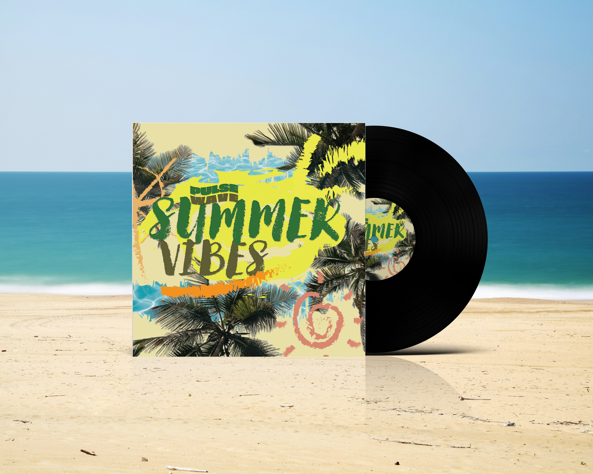

NEON6IX

NEON6IX is a shimmering journey through Toronto’s neon-lit nights, blending the nostalgic warmth of citypop with the hazy textures of modern lofi. Inspired by the rhythm of streetcars, the glow of Dundas Square, and the quiet pulse of late-night walks along Queen Street, the album captures the duality of the city—its electric energy and its introspective calm.
Each track feels like a cinematic vignette:
- Dreamy synths echo the skyline’s glow.
- Dusty drum loops mirror the heartbeat of hidden alleyways.
- Smooth basslines carry the listener through rain-slick streets and rooftop reflections
Toronto’s multicultural spirit breathes through the soundscape, weaving together influences from Japanese citypop aesthetics and North American lofi culture. The result is a sonic palette that feels both retro and futuristic—like flipping through a neon-soaked photo album of the city at night. NEON6IX isn’t just music; it’s a moodboard of urban nostalgia, a soundtrack for night drives, study sessions, and quiet moments of self-reflection. It invites listeners to lose themselves in the glow of the city, where every beat is a flicker of neon and every melody a memory waiting to be replayed.
Song list
- Neon Lake
- CN Tower Glows
- Toronto Dream
- Cold Neon Lights
- Skyline Dreams
- Toronto Nights
- City Lights
- Oh Toronto
- Midnight Rain
- I find my dreams
Song: CN Tower glows
Summer Vibes

Summer Vibes is a sun-soaked reggae journey that captures the essence of long days, warm nights, and carefree rhythms by the shore. Blending classic island grooves with modern touches, the album radiates positivity and invites listeners to slow down, breathe deep, and let the music carry them.
Sound & Style
- Laid-back reggae beats with breezy guitar riffs
- Dynamic environments: Experience shifting weather patterns and a day/night cycle as you play.
- Pulsating basslines that echo the heartbeat of the tropics
Song list
- Sunshine Waves
- Endless Heatwave
- Summer Groove
- Endless Sunbeam
- Sunburn Sneakers
- Summer Breeze
- Sunshine Dreams
- Endless Sunshine
- Sunshine Vibes
- Sunset Vibin'
Song: Endless Sunshine